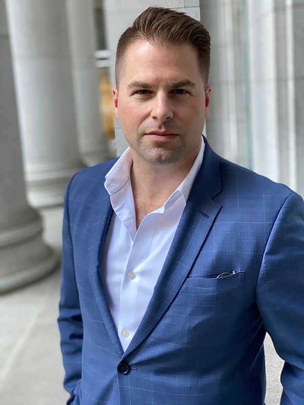

Hi, I’m Brady J. Frey
I'm an executive in the San Francisco Bay Area.

I lead a diversified family office with operations spanning commercial real estate, agriculture, and asset management across four states and five countries.
I've led landmark acquisitions and divestitures, including the Bently Reserve, Bently Heritage, and 240 Stockton Street, and have served as decision-maker on litigation through federal court and the California Court of Appeal. My work focuses on long-horizon stewardship, disciplined judgment, and preserving institutional integrity under pressure.
Before my role as an executive, I was an Art & Technology Director with clients including Nike, Williams-Sonoma, the Smithsonian, Snap-On, and Harley-Davidson.
I hold an M.A. in Philosophy from San José State University, with a focus on AI ethics and comparative philosophy. I'm a peer reviewer for Springer's AI & Ethics and Philosophy of Management, and I lecture on philosophy and leadership.
- Learn More
- See my research
- Read my CV
- Connect on LinkedIn
- Email me: hello@bradyjfrey.com